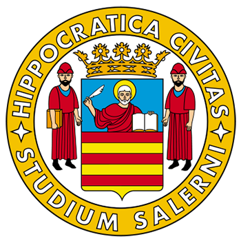
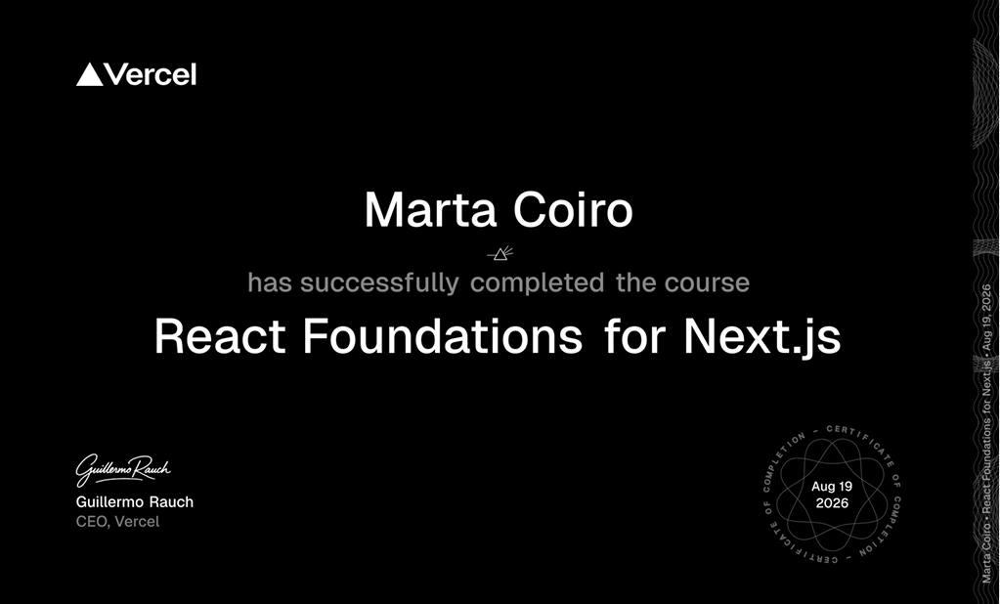
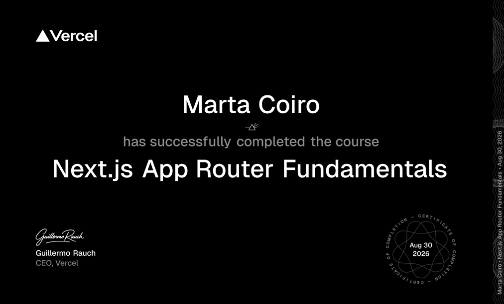

FULL-STACK DEVELOPER · CYBERSECURITY
Ciao, sono Marta Coiro
Sviluppo applicazioni web e servizi backend, con una formazione specialistica in sicurezza informatica e un approccio attento a qualità, affidabilità e protezione del software.
Attualmente in R&D presso Digital Platforms S.p.A.
Chi sono
PIACERE, SONO MARTA
Full-stack developer con una sensibilità per la sicurezza
Sono Marta Coiro, laureata magistrale in Informatica, curriculum Sicurezza Informatica, presso l'Università degli Studi di Salerno. Oggi lavoro come R&D Full-stack Developer presso Digital Platforms S.p.A.
Mi occupo dello sviluppo di applicazioni web con React e Angular, della realizzazione di servizi backend con Node.js e Java, della progettazione e gestione di database PostgreSQL e dell'integrazione di servizi esterni tramite API REST.
Il mio percorso in Sicurezza Informatica mi ha permesso di approfondire crittografia, programmazione sicura, digital forensics e penetration testing. Mi interessa portare questa attenzione alla sicurezza all'interno del ciclo di sviluppo del software.
Curiosità, determinazione e collaborazione guidano il mio modo di lavorare. Mi piace affrontare problemi nuovi, imparare tecnologie e contribuire a progetti concreti insieme a un team.
Conosciamoci meglio ↗Competenze tecniche
Le tecnologie e gli strumenti che utilizzo nello sviluppo software e nell'ambito della sicurezza.
Backend & Programming
Database & API
Cybersecurity & Systems
Tools & Workflow
Framework & Mobile
Esperienze professionali
Giugno 2026 – AttualeR&D · Full-stack
R&D Full-stack Developer · Digital Platforms S.p.A.
Napoli, Italia
- Sviluppo di applicazioni web e PWA con React e Angular.
- Realizzazione di servizi backend con Node.js e Java.
- Progettazione e gestione di database PostgreSQL e integrazione di servizi esterni tramite API REST.
- Contributo alla progettazione e implementazione di funzionalità e soluzioni per progetti interni di Ricerca e Sviluppo.
- Utilizzo quotidiano di Git e Jira, con workflow basati su branch, pull request e metodologie Agile.
Novembre 2025 – Maggio 2026
Frontend Developer Intern · Digital Platforms S.p.A.
Napoli, Italia
- Consolidamento di HTML5, CSS3, JavaScript ES6+ e TypeScript, con specializzazione su React 18/19 e Angular.
- React: componenti e hook, Server Components, useActionState, Redux e TanStack Query.
- Angular: Service, Direttive, Resolver, RxJS e Angular Material.
- Realizzazione di una web app responsive a partire da mockup Figma e integrazione con servizi del cliente tramite UUID/TenantId.
- Test delle API con Postman, collaborazione Agile/Scrum con GitHub e GitLab, tooling Vite e Bun e deploy su Vercel.
Novembre 2022 – Febbraio 2023Tirocinio
Studente tirocinante · Sense Square
Penta (SA), Italia
Studio del suolo attraverso algoritmi di Machine Learning e immagini satellitari Sentinel-2 della costellazione Copernicus. Analisi delle immagini e delle variazioni cromatiche territoriali utilizzando Python e relative librerie.
Esperienza formativaFormazione STEM
Formatrice · Coding Girls
Attività di formazione nelle scuole per incentivare la partecipazione delle ragazze alle discipline STEM e diffondere competenze di programmazione e cultura digitale.
Formazione
Settembre 2023 – Ottobre 2025110 e lode
Laurea Magistrale in Informatica · Curriculum Sicurezza Informatica

Università degli Studi di Salerno · Fisciano (SA)
Approfondimenti in sicurezza dei dati, crittografia, cybersecurity, basi di dati II, digital forensics, visione artificiale e programmazione sicura.
Tesi: “Offuscamento del codice: tra teoria e pratica. La piattaforma ObfuSee”.
Esperienza significativa: partecipazione all'App Challenge con un'applicazione legata alla sicurezza informatica, realizzata in collaborazione con LinearIT e classificata sul podio.
Progetto ObfuSee su GitHub ↗Settembre 2019 – Maggio 202395/110 e lode
Laurea Triennale in Informatica
Università degli Studi di Salerno · Fisciano (SA)
Formazione in programmazione C e object-oriented, tecnologie software per il web, sviluppo Android, database, grafica e interattività, crittografia e applicazioni distribuite.
Tesi: “Sviluppo di algoritmi per l'analisi del suolo mediante l'utilizzo delle immagini del satellite Sentinel 2 della costellazione Copernicus”.
Progetto Sentinel2 su GitHub ↗2015 – 201989/100
Diploma · Liceo Scientifico, opzione Scienze Applicate
Istituto d'Istruzione Superiore “F. De Sarlo – G. De Lorenzo” · Lagonegro (PZ)
Certificazioni
Percorsi di formazione completati su React e Next.js, con attestati rilasciati da Vercel.

19 agosto 2026Vercel
React Foundations for Next.js
Corso dedicato ai fondamenti di React come base per lo sviluppo con Next.js.

30 agosto 2026Vercel
Next.js App Router Fundamentals
Percorso sui fondamenti dell'App Router di Next.js.
Progetti selezionati
Una selezione di progetti accademici e applicativi descritti nel mio percorso.
ObfuSee
Piattaforma sviluppata per esplorare l'offuscamento del codice come tecnica di protezione del software.
Esplora su GitHub ↗DefNet
Applicazione legata alla sicurezza informatica realizzata per l'App Challenge in collaborazione con LinearIT. Il progetto ha raggiunto il podio.
Esplora su GitHub ↗MusicConsole
Progetto e-commerce musicale: gestione del database, interfaccia grafica e documentazione per la presentazione finale.
Esplora su GitHub ↗Sentinel2
Analisi del suolo e dei territori attraverso immagini satellitari Sentinel-2 della costellazione Copernicus.
Esplora su GitHub ↗The Code Insight Platform
Web app per esperimenti sulla comprensione del codice, con un confronto tra commenti generati dall'intelligenza artificiale e commenti scritti da persone.
Esplora su GitHub ↗Pubblicazioni e ricerca
Un contributo alla ricerca sull'utilizzo dell'intelligenza artificiale per supportare la comprensione del codice.
Ricerca scientifica · Intelligenza artificiale · Software Engineering
KES 2026 · Dublino
Il supporto dell'intelligenza artificiale nella comprensione del codice
Studio sperimentale che confronta tre modalità di supporto alla comprensione del codice: commenti scritti da sviluppatori, commenti generati dall'intelligenza artificiale e interazione conversazionale con un chatbot.
Metodo
Studio con 18 studenti universitari, su frammenti di codice Java e Rust.
Risultati
I commenti generati dall'IA hanno ridotto i tempi medi di comprensione; il chatbot è stato percepito come il supporto più utile.
Contributo
Ricerca condotta in collaborazione con il gruppo di coautori e presentata alla conferenza KES 2026 a Dublino.
Altre informazioni
Lingue
Italiano: madrelingua
Inglese: B2 (ascolto, lettura, produzione, interazione e scrittura)
Competenze trasversali
Collaborazione in team, gestione autonoma delle attività, definizione delle priorità, coordinamento di progetti di gruppo e comunicazione con persone di culture diverse.
Interessi
Fotografia, riprese video, disegno, musica, viaggi e sport. La pratica del tennis ha contribuito a sviluppare determinazione e orientamento al miglioramento.
Parliamo del tuo prossimo progetto
Se cerchi una sviluppatrice con competenze full-stack e una formazione in sicurezza informatica, sarò felice di conoscere la tua idea.
martacoiro291@gmail.com